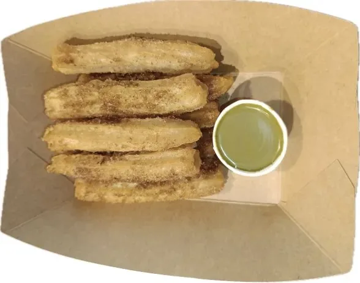
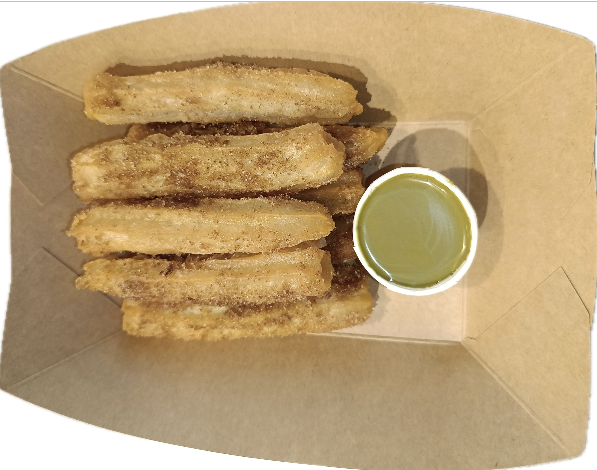
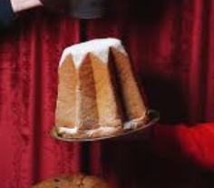

Procedura ufficiale per i prodotti delle feste: frittura churros, servizio Panettone/Pandoro con upsell
Buontalenti, mini gift e gestione mulled wine.

Prodotti Festivi
Churros · Panettoni · Vin Brulé
Fryer 190 °C8 pezzi/porzione
Churros

Bastoncini di pastella fritta, croccanti fuori e morbidi dentro.
Serviti caldi (8 pezzi) con zucchero e cannella.
1 - Prepara il mix zucchero/cannella in una teglia larga.2 - Preleva 8 churros dal freezer, friggi 8-9 min finche' dorati.3 - Scola bene l'olio e passa i churros nel mix per una copertura uniforme.
Controlla costantemente i tempi per evitare centro crudo; sostituisci l'olio quando scurisce.
🛠️ Pro tip: Temperatura olio critica: 190 °C esatti. Piu' bassa = unto, piu' alta = bruciato esterno/crudo interno. Sostituisci olio ogni 40 porzioni o quando scurisce.
Slice service8 porzioni
Panettone Classico
Il re delle feste. Ricetta tradizionale con uvetta e canditi, lievitazione naturale.
Servito a fetta (1/8) su piatto dessert con posate.
Taglio: verticale seguendo le 8 linee guida, coltello seghettato lungo
Porzioni: 8 spicchi uniformi per coerenza
Presentazione: piatto dessert + cutlery sempre
Campione visivo: tieni una fetta visibile al banco per stimolare ordini (storytelling visivo)
1 - Taglia verticale seguendo le linee guida.2 - Disponi sul piatto con cutlery.3 - Offri subito upsell: scoop Buontalenti + sauce o hot chocolate.
Campiona una delle 8 fette per storytelling e conversione vendite.
💰 UpsellingOpzione 1: "Fetta + scoop Buontalenti e' il nostro abbinamento signature"Opzione 2: "Aggiungi salsa pistacchio per contrasto perfetto?"Opzione 3: "Con cioccolata calda diventa un momento di pura indulgenza"
🛠️ Pro tip: Usa coltello seghettato lungo per taglio netto senza sbriciolare. 8 spicchi uniformi seguendo guida. Esponi fetta campione per stimolare ordini visivi.
Warm optionCrepe plate
Panettone Dark Chocolate
Variante golosa con gocce di cioccolato fondente nell'impasto.
Ottimo servito tiepido (10'' su piastra) per sciogliere il cioccolato.
Piastra crepe: pulita e asciutta (no olio)
Timing: 10 secondi per lato esatti (non di piu' o perde croccantezza)
Servizio immediato: servi subito dopo cottura
Abbinamenti: Dark Chocolate + salsa pistacchio (contrasto gourmet)
Upsell: gelato freddo + panettone caldo = contrasto di temperatura sensazionale
1 - Posiziona la fetta sulla piastra crepe.2 - Tosta 10 secondi per lato (no olio).3 - Servi con sauce e Buontalenti se richiesto.
La versione Dark Chocolate si abbina con sauce Pistacchio per contrasti.
💰 UpsellingOpzione 1: "Versione calda con gelato freddo = contrasto incredibile"Opzione 2: "Dark Chocolate + sauce pistacchio? Abbinamento gourmet"Opzione 3: "Proponi sempre opzione tiepida per esperienza premium"
🛠️ Pro tip: Piastra crepe pulita e asciutta. 10 secondi per lato, no olio. Servi immediatamente per mantenere croccante fuori/morbido dentro. Profumo attira altri clienti.
Powder sugar
Pandoro Classico

Soffice, burroso, a forma di stella a 8 punte.
Servito con spolverata di zucchero a velo al momento.
Taglio: seguendo la guida a stella per 8 spicchi uniformi (effetto presentazione professionale)
Zucchero a velo: SEMPRE al momento del servizio, non prima (effetto neve fresca visivamente)
Piatto dessert + cutlery: sempre
Temperatura: ambiente per massimo profumo
Storytelling: "Lievitazione 36 ore con ingredienti premium" (giustifica valore)
Abbinamenti suggeriti: gelato Buontalenti, salsa mascarpone o pistacchio
1 - Taglia seguendo la guida (A) per ottenere spicchi regolari.2 - Disponi su piatto con cutlery.3 - Spolvera zucchero a velo e proponi scoop Buontalenti + sauce pistacchio.
Racconta il metodo di lievitazione naturale per valore percepito.
💰 UpsellingOpzione 1: "Pandoro + Buontalenti = tradizione + innovazione"Opzione 2: "Salsa mascarpone o pistacchio per twist gourmet?"Opzione 3: "Racconta lievitazione 36 ore per giustificare valore"
🛠️ Pro tip: Spolvera zucchero a velo AL MOMENTO del servizio per effetto neve fresca. Taglia spicchi uniformi stella a 8 punte. Temperatura ambiente per massimo profumo.
Hot drinkSpezieArancia
Mulled Wine (Vin Brulé)
Bevanda calda speziata, servita con fetta d'arancia. È la proposta “comfort” della stagione:
racconta profumo e rituale, poi guida l'upsell (mini panettone / churros / shot opzionali secondo store).
Servizio: cup + mestolo dedicato
Garnish: fetta d'arancia (sempre)
Timing: servi caldo, non bollente
Script: "È il nostro Vin Brulé speziato, perfetto da abbinare a un mini panettone"
1 - Presenta: profumo, spezie, fetta d'arancia (rituale).2 - Servi con mestolo dedicato e garnish.3 - Proponi combo: mini panettone / churros / dolce caldo.
Collega sempre Vin Brulé ↔ macchina ↔ procedure (setup/chiusura) per coerenza e qualità.
💰 UpsellingCombo: "Vuoi abbinarlo a un mini panettone?"Extra: "Aggiungiamo una salsa a parte per il dolce?"Premium: "Shot opzionale (secondo listino locale)"
Warm slice10" x latoNo oil
Servizio Caldo (Pandoro)
Chiedi sempre se la fetta la vuole tiepida. Tosta 10 secondi per lato sulla piastra crepe (senza olio) e servi immediatamente.
Piastra crepe: pulita e asciutta (mai olio)
Timing: 10 secondi per lato
Servizio immediato: impiatta subito per mantenere volume e calore
1 · Chiedi preferenza calda/fredda.2 · Tosta 10" + 10" (no oil).3 · Impiatta e proponi pairing (gelato/sauce).
La fetta tiepida profuma e “vende” anche ai clienti vicini.
Operazioni & Conservazione
Setup · Dati tecnici · Storage · Shelf life · Chiusura
SetupVin Brulé600 ml
Setup macchina Vin Brulé
Setup corretto: outer tank con ~600 ml di acqua (senza raggiungere il max) e inner container inserito bene (non deve galleggiare).
1 · Acqua nel tank esterno (~600 ml, no max).2 · Inserisci il contenitore interno e chiudi con lid.3 · Versa il mix nel tank argento quando pronto a scaldare.
SettingLevel 1025/30 min
Warm-up & mantenimento (Vin Brulé)
Warm-up e mantenimento: livello 10 per 25–30 minuti, poi livello 6–7.
Versare 500/1000 ml (meglio meno che troppo, in base alle vendite)
Warm-up: livello 10 per 25–30 min
Hold: livello 6–7
1 · Versa il mix e porta a livello 10 (25–30 min).2 · Quando è caldo, setta 6–7 per mantenimento.3 · Lid sempre: riduce evaporazione e mantiene aromi.
ConservazioneNightFrigo
Come conservarlo di notte
Fine servizio: travasa in una jug, lascia raffreddare, copri con cling film e conserva in frigo con label.
Jug: travaso a fine servizio
Cool down: prima di coprire
Frigo + shelf life label
1 · Travasa in jug e lascia raffreddare.2 · Cling film una volta freddo.3 · Frigo + label (data/ora).
Dati tecniciShelf life3 / 30
Shelf life Vin Brulé (quick)
Regola shelf life: in macchina 3 giorni dal primo warm-up; in box 30 giorni dal primo opening. Label obbligatoria.
In macchina (warm): 3 giorni dal primo warm-up
In box (mix): 30 giorni dal primo opening
Label obbligatoria per entrambi
1 · Segna la data del primo warm-up.2 · Applica label visibile in frigo.3 · Se oltre shelf life: elimina.
ChiusuraPuliziaSoap + hot water
Pulizia macchina (fine giornata)
Dopo il travaso: lava inner container + lid con sapone e acqua calda, svuota/asciuga il tank acqua e pulisci l'esterno con panno umido.
Inner container + lid: lavare con sapone e acqua calda
Tank acqua: svuotare e asciugare
Esterno: panno umido
1 · Lava e asciuga i pezzi interni.2 · Svuota e asciuga il tank esterno.3 · Rimonta e lascia la macchina pulita per l'apertura.
PackagingDeliveryFreezer hold
Packaging mini panettone (delivery)
Delivery standard: sauce pot 3/4 (1 pot per 2), panettoni agli angoli del treat box, lid + tape e freezer fino al ritiro rider.
Sauce pot: 3/4 (quantità per due)
Posizionamento: panettoni ai quattro angoli, sauce al centro
Freezer: conserva in bag fino al pick-up driver
1 · Sauce pot 3/4 e posiziona al centro.2 · Mini panettoni agli angoli del box, chiudi lid + tape.3 · Bag in freezer fino al ritiro del driver.